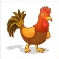
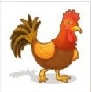

Bienvenue sur le site du Memory de l'ENI.
Venez jouer avec nous et
faites le meilleure score possible
Règle du jeu :
- Retournez deux cartes. Si les images sont identiques, le jeu laisse les cartes visibles
- Si les images sont différentes, lles cartes se retournent faces cachées là où elles étaient
- La partie est terminée lorsque toutes les cartes ont été assemblées par paires
 



Si vous voulez vous souvenir de votre score, inscrivez-vous via le
formulaire.
Le jeu garde les 5 meilleurs scores
Si vous voulez relancer une partie cliquez sur
la barre espace